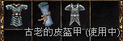

2003年2月24日 美國測試伺服器攻城實錄 鳴謝美國測試伺服器的GALANT提供以下內容！ 2月23日 AM 6:55 早上我拿下美國伺服器亞丁城堡
早上這場反王跟他的魔女又出現了 超怪 又復活啦
外國人都以為要打贏反王才能拿城堡 在那邊拼命打
我是無聊在打中間的塔 沒想到....... 真的可以可以打倒
結論是亞丁城堡的四個元素塔並無作用 所以說四個塔不用打
因為並沒有開放元素牆所以小塔沒用
直接打中間的塔即可 下面反王照片你們看都沒什麼人打
因為大家都不知道今天反王會出來
加上大家都不敢過來因為魔女在那邊
已經死了一堆人了....... 永遠的榮耀阿!!!!!!
http://myweb.hinet.net/home1/kiddgogo/PIC/10.jpg
http://myweb.hinet.net/home1/kiddgogo/PIC/11.jpg
http://myweb.hinet.net/home1/kiddgogo/PIC/12.jpg
http://myweb.hinet.net/home1/kiddgogo/PIC/13.jpg
http://myweb.hinet.net/home1/kiddgogo/PIC/14.jpg
http://myweb.hinet.net/home1/kiddgogo/PIC/15.jpg
http://myweb.hinet.net/home1/kiddgogo/PIC/16.jpg
http://myweb.hinet.net/home1/kiddgogo/PIC/17.jpg
http://myweb.hinet.net/home1/kiddgogo/PIC/18.jpg
http://myweb.hinet.net/home1/kiddgogo/PIC/19.jpg
http://myweb.hinet.net/home1/kiddgogo/PIC/20.jpg 補充一張照片
我安全拿下
http://myweb.hinet.net/home1/kiddgogo/PIC/21.jpg 下面是有關風龍的事情
因為玩到現在整體感覺上面亞丁這版有很多問題 以下三個小小的影片檔是我把風龍玩到當機發現BUG的時候所拍的
影片是後來GM跑出來看在那邊跑阿跑~
只要看到風龍在天空飛下來GM消失就是GM當掉了
因為風龍被我跟另一個台灣人玩到風龍只會上下飛 我們打風龍他也不會環擊只會往上飛
一飛下來所有人都會跳離天堂 而影片中我跟兩個老外為什麼沒有當掉
是因為有的位置你站著風龍飛下來只會顯示缺什麼檔案 所以我們沒當掉
http://myweb.hinet.net/home1/kiddgogo/AV/01.rar
http://myweb.hinet.net/home1/kiddgogo/AV/02.rar
http://myweb.hinet.net/home1/kiddgogo/AV/03.rar 以下圖片是我台灣時間2月17日晚上亞丁城堡拍的
我有對亞丁宣戰可惜從頭打到晚上反王依舊還是贏
順便澄清一下宣戰亞丁並沒有王子要五十級的傳說......
因為台灣很多人流傳說摸亞丁並需要王族Lv50才可以
只要你王子25級即可宣戰
但是他身邊的魔女法師魔法強是強
但是沒五分鐘就被KO了 http://myweb.hinet.net/home1/kiddgogo/PIC/01.jpg
http://myweb.hinet.net/home1/kiddgogo/PIC/02.jpg
http://myweb.hinet.net/home1/kiddgogo/PIC/03.jpg
http://myweb.hinet.net/home1/kiddgogo/PIC/04.jpg
http://myweb.hinet.net/home1/kiddgogo/PIC/05.jpg 風龍是不主動攻擊玩家的 除非玩家主動去攻擊他 他才會攻擊 http://myweb.hinet.net/home1/kiddgogo/PIC/06.jpg
http://myweb.hinet.net/home1/kiddgogo/PIC/07.jpg
http://myweb.hinet.net/home1/kiddgogo/PIC/08.jpg
這個姿勢超棒 哈哈.......
http://myweb.hinet.net/home1/kiddgogo/PIC/09.jpg
古代皮盔甲回血及回魔測試  鳴謝香港太陽神玩家KurtCobain借出古代皮盔甲作為測試之用。 古代皮盔甲的防禦力有14，重180，不能加防，妖精專用。而最近更加入了加速回血及回魔的效果，究竟加速的程度有多少呢？因此我們作了以下測試： 測試角色：46級妖精 18體質 12精神 站立狀態 沒用藍水 沒用冥想 不在旅館 不在盟屋 不在母樹 原先的回血及回魔資料：
回血量：1-6HP，間隔時間為2-3秒
回魔量：1MP，間隔時間為15-16秒
淨化精神後(17精神)的回魔量為3MP，間隔時間為15-16秒 裝備古代皮盔甲後的資料：
回血量：2-7HP，間隔時間為2-3秒
回魔量：3MP，間隔時間為15-16秒
淨化精神後(17精神)的回魔量為5MP，間隔時間為15-16秒 因此可見古代皮盔甲的額外效果是體力回復量+1，魔力回復量+2，但不會影響回復的間隔時間。另外在裝備了古代皮盔甲在過重的狀態下仍然是不會漸漸回血及回魔的。 假如你在香港太陽神有已經解印的古代鱗甲而又願意進行測試的話，請在遊戲中聯絡"Lineage"。 圖片 | 中文名稱（簡稱） | Name | 防禦 | 重量 | 材質 | 職業 | 其他說明 |  | 古代皮盔甲 | Ancient Leather Armor | 14 | 180 | 皮 | 妖精 | 必須等級45，體力回復量+1，魔力回復量+2，不能加防 |
| 
{kind=link}
{kind=link}
{kind=link}
{kind=link}
{kind=link}
{kind=link}
{kind=link}
{kind=link}
{kind=link}
{kind=link}
{kind=link}
{kind=link}
{kind=link}
{kind=link}
{kind=link}
{kind=link}
{kind=link}
{kind=link}
{kind=link}
{kind=link}
{kind=link}